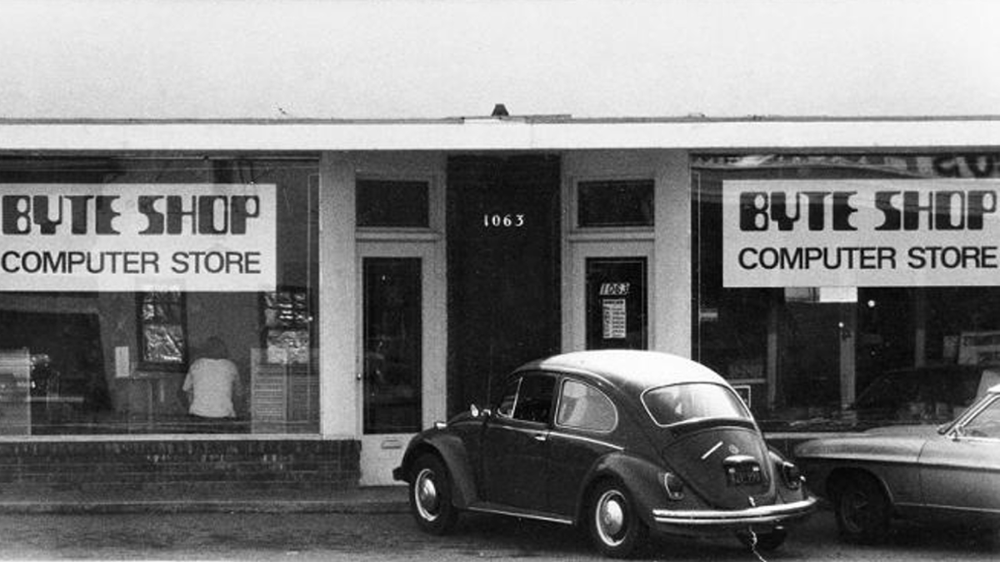

The history of the first Apple Store
The first Apple Store opened on May 19, 2001, in Tysons Corner, Virginia, USA. This event marked a revolutionary change in the way technology products were showcased to the public, allowing customers to experience hands-on demonstrations with Apple products.
The store was designed to make technology accessible, offering classes, workshops, and technical support to enhance the Apple experience. Its innovative layout, featuring Genius Bars and open spaces for product interaction, set the foundation for the hundreds of Apple Stores that followed across the globe.
The Vision Behind Apple Stores
Steve Jobs, Apple's co-founder and CEO at the time, envisioned the Apple Store as more than just a retail space. He wanted to create an environment where people could discover, explore, and learn about Apple products in a hands-on, immersive way. This approach was a stark contrast to the typical computer retail experience of the early 2000s.
The stores were designed to be open and inviting, with products displayed on wooden tables that allowed customers to interact with them freely. This "open-display" concept was revolutionary at the time and has since been widely imitated in the tech retail industry.
Impact on Retail and Tech Industries
The success of Apple Stores has had a profound impact on both the retail and tech industries. Many other tech companies, including Microsoft and Samsung, have since opened their own retail locations, inspired by Apple's model. The stores have also influenced retail design more broadly, with many brands adopting elements of Apple's minimalist, experience-focused approach.
Today, Apple Stores continue to serve as hubs for innovation and customer engagement, reflecting Apple's mission to blend technology with creativity. Whether you're attending a session on coding, photography, or simply exploring the latest devices, each store reflects a perfect blend of design, technology, and community spirit.
Evolution of Apple Stores
Over the years, Apple Stores have evolved to keep pace with changing technology and customer needs. They've introduced new features like the Genius Bar for technical support, Today at Apple sessions for skill-building workshops, and more recently, redesigned stores that function as "town squares" for local communities.
As of 2024, there are over 500 Apple Stores worldwide, each one continuing the tradition of innovation, customer experience, and community engagement that began with that first store in Tysons Corner more than two decades ago.